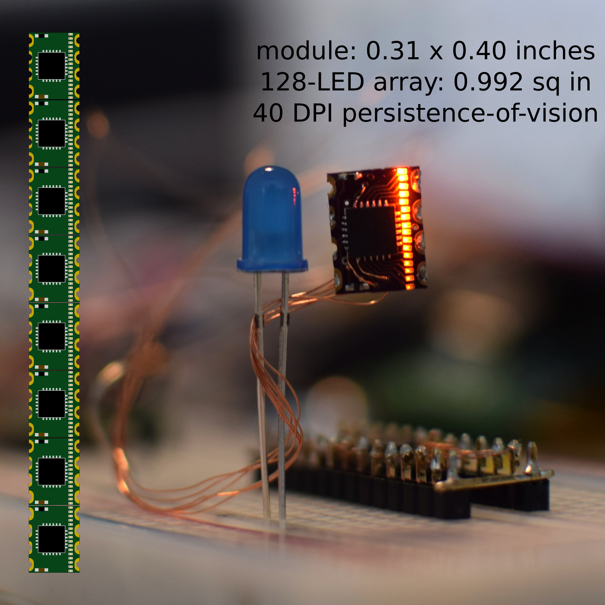
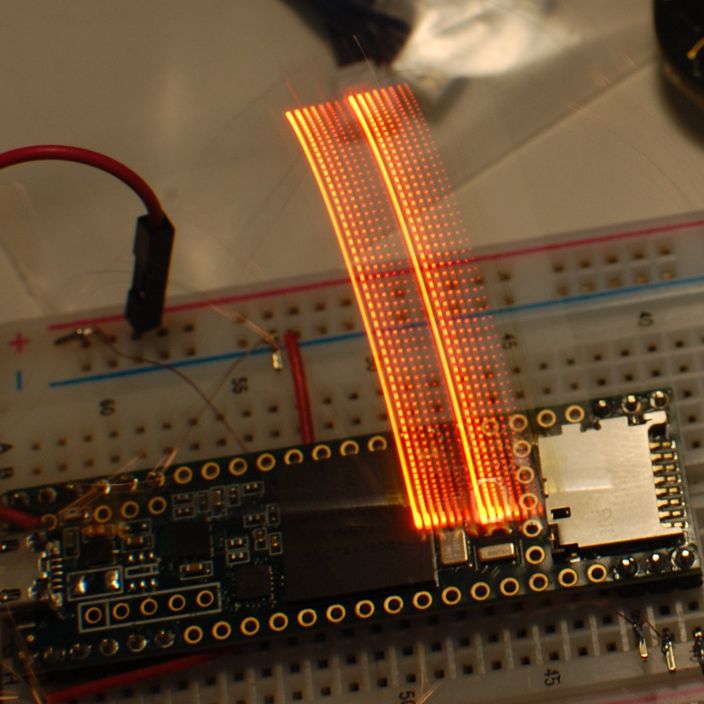
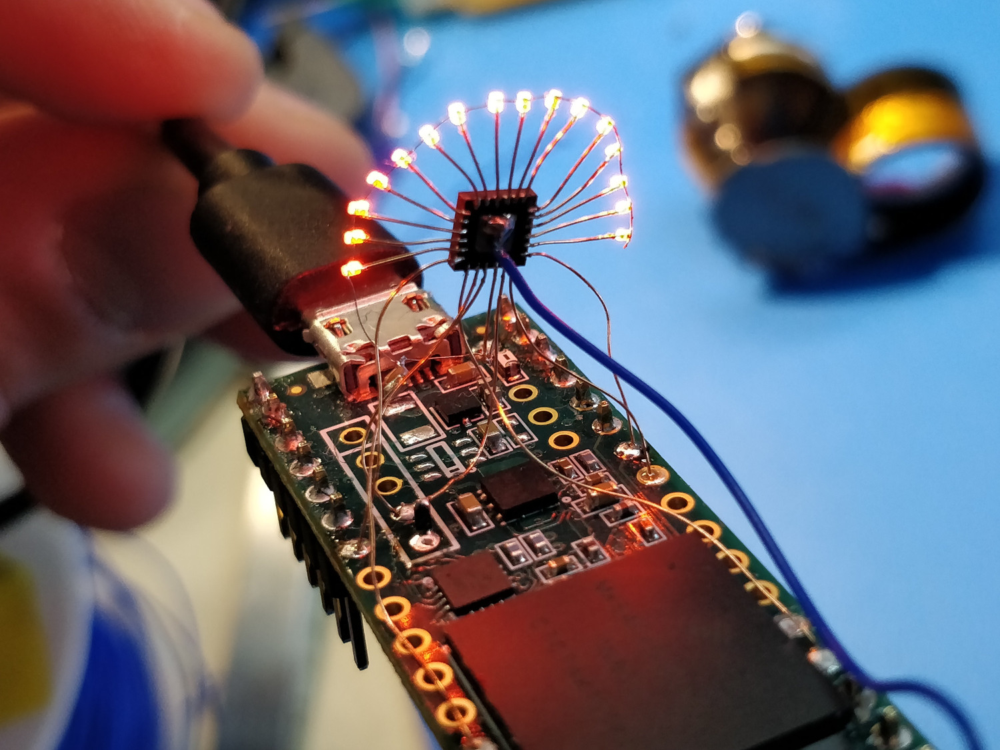

Rotovis-Mod1

A tiny castellated board designed to help designers build high-DPI persistence-of-vision displays. DIP8-sized with 16 LEDs and a driver chip, allowing TI-83 resolution (40 DPI) with 8-bit greyscale. Led to development of a novel dual-stencil technique for hand-assembling closely spaced 0201 LEDs. Runner Up, 2018 Hackaday Square Inch Contest.

I also built a free-air version, perched atop a Teensy 3.6:

Source files, more documentation
© copyright zach fredin, 2017-2018